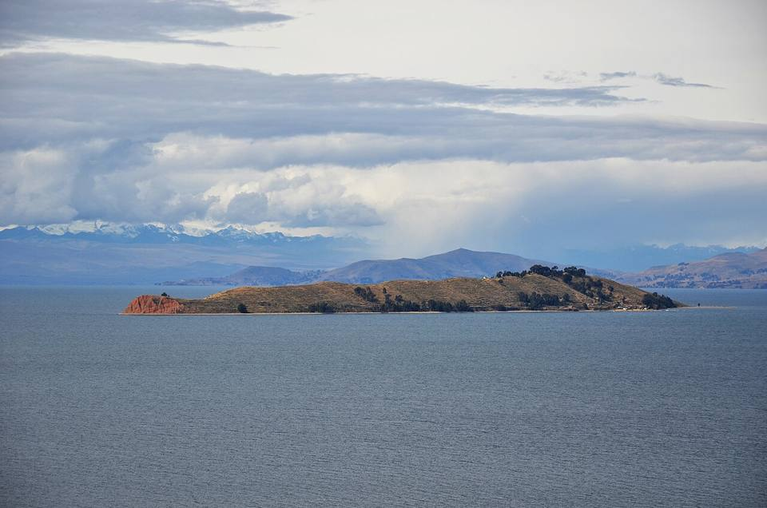
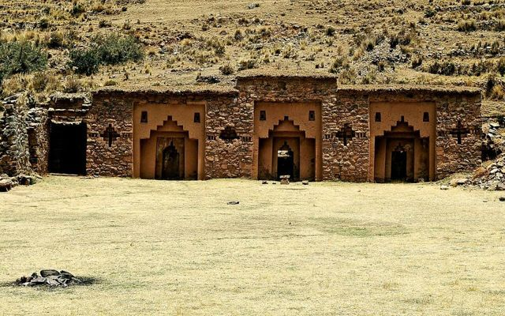
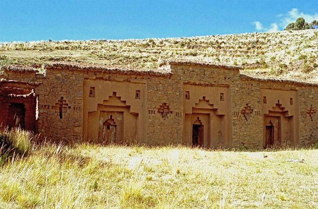
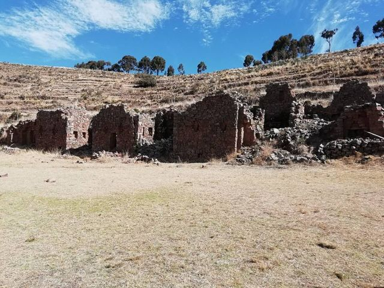
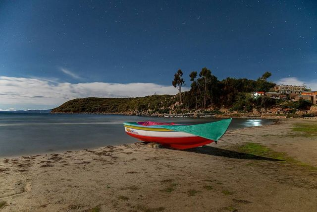
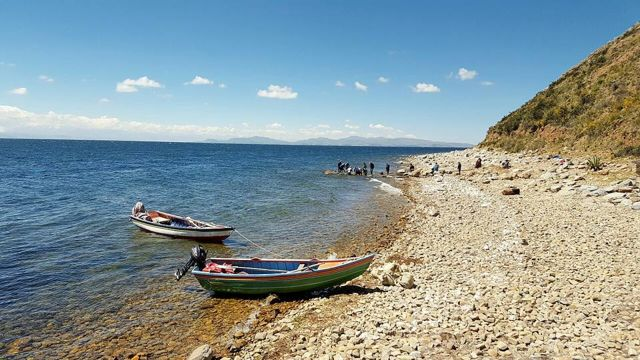
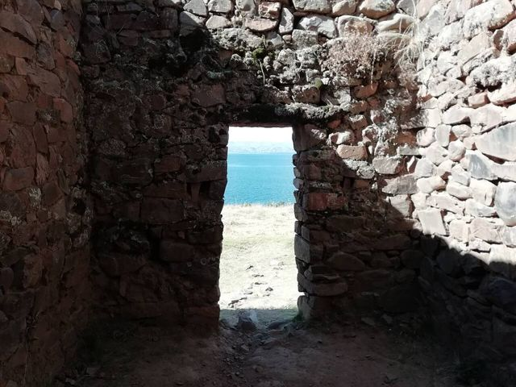
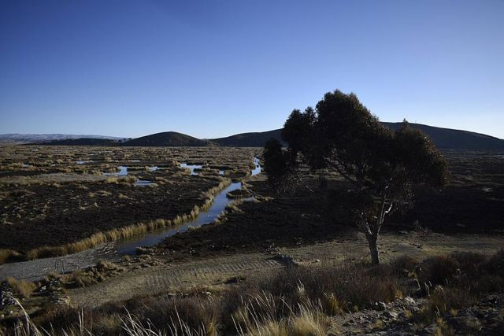

Isla de la Luna
Departamento de La Paz · Cultura e historia

Más pequeña y tranquila que su vecina, la Isla de la Luna albergaba el templo de las Vírgenes del Sol, mujeres elegidas para servir al culto inca. Una parada corta en bote que se combina fácilmente con la Isla del Sol.
3850 maltura
1 díapara quedarse
Gran altura. Por encima de 3500 m, el mal de altura (soroche) es frecuente. Llega de a poco, toma mucha agua y ve despacio el primer día.
Qué hacer
- Templo de Iñak Uyu
- Combinable con la Isla del Sol el mismo día
Qué comer
- TruchaTrucha del lago Titicaca o de los ríos de la Cordillera, frita o a la parrilla, con arroz, papas fritas y ensalada. Se come en la playa de Copacabana y en los restaurantitos de los pueblos de montaña.
- Ispi y pejerreyPescaditos del lago fritos y crocantes, para comer enteros con un poco de limón.
Consejo. Botes desde Copacabana o Yumani.
Cómo llegar a Isla de la Luna
Isla del Sol Bote · 30 a 45 min
Bote privado o tour combinado.
Copacabana Bote · 1 h
Tour en bote combinado Isla del Sol e Isla de la Luna.
Fotos de Isla de la Luna



_-_Bolivia-97.jpg){kind=link}








Otros lugares de la región
 Copacabana (lago Titicaca)Pequeña ciudad a orillas del lago Titicaca, puerta de entrada a la Isla del Sol.
Copacabana (lago Titicaca)Pequeña ciudad a orillas del lago Titicaca, puerta de entrada a la Isla del Sol. Isla del SolIsla sagrada de los incas: senderos, ruinas y vistas a la Cordillera Real.
Isla del SolIsla sagrada de los incas: senderos, ruinas y vistas a la Cordillera Real. HuatajataPueblo del lago Titicaca, cuna de las balsas de totora.
HuatajataPueblo del lago Titicaca, cuna de las balsas de totora. Isla SuriquiLa isla de los constructores de balsas de totora, entre ellas las de la expedición Ra II.
Isla SuriquiLa isla de los constructores de balsas de totora, entre ellas las de la expedición Ra II.
Isla ParitiPequeña isla del Titicaca con su museo de cerámica Tiwanaku encontrada en el lugar.